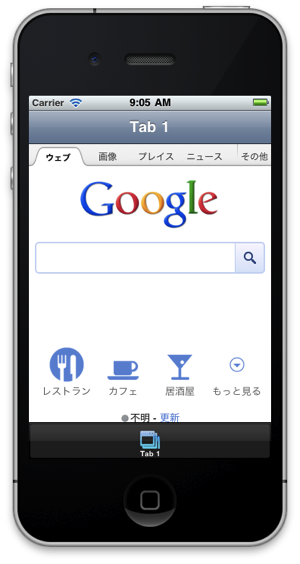
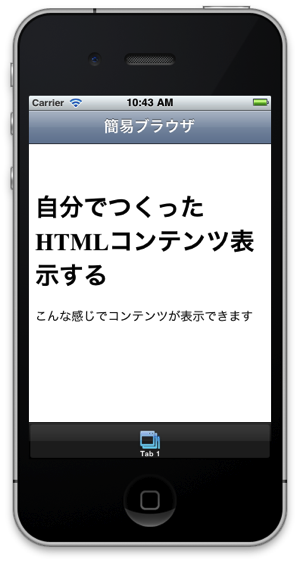

- About the author
- Questions and Issues
- Edit and Contribute
- Introduction
- 1) JavaScript基礎
- 2) Titanium Classic基礎
- 3) イベント駆動型プログラミングの基礎
- 4) WebViewの使い方について学ぶ
- 5) TableViewの使い方について学ぶ
- 6) HTTPClientの使い方を学ぶ
- 7) Titanium Classic応用編
- 8) ソースコードの保守性をあげる工夫
- 9) TableViewを一工夫して利用する
- 10) 手軽に使えて開発効率があがるJavaScriptライブラリの紹介
- 11) 日付処理を便利に行えるmoment.js
- 12) 配列操作を便利に行えるUnderscore.js
WebViewを活用した簡易Webブラウザ開発
WebViewとは？
WebKitブラウザ機能とほぼ同等の機能を持った部品です。
HTML5/CSS3ベースのHTMLコンテンツをほぼそのまま動作させることが可能で、指定したURLのHTMLコンテンツ表示やあらかじめ自分が作成したHTMLコンテンツの表示などを行うことができます
※WebKitとは： WebブラウザのSafariにも標準搭載されるオープンソースソフトウェアでHTML、CSS、JavaScript等を解釈して画面描画を担当してます。

なお、WebViewの良い点としては、HTMLコンテンツが表示できるのでCSSと組み合わせることで細かいレイアウトを実現できる所があります。
しかしWebViewだけを使ったiPhoneアプリはアプリの審査基準ガイドラインの12.3：Apps that are simply web clippings, content aggregators, or a collection of links, may be rejectedに該当する可能性あるかもしれないため、その点は念頭に置かれたほうがよいかと思います。
指定したURLを表示する機能の実装
プロジェクト設定完了後に作成されるapp.jsのソースコードの一部を改造して、指定したURLのサイトを表示できるようにします。
var tabGroup,win1,tab1,webView;
Ti.UI.setBackgroundColor('#000');
tabGroup = Ti.UI.createTabGroup();
win1 = Ti.UI.createWindow({
title:'Tab 1',
backgroundColor:'#fff'
});
tab1 = Ti.UI.createTab({
icon:'KS_nav_views.png',
title:'Tab 1',
window:win1
});
webView = Ti.UI.createWebView(); // (1)
webView.url = 'http://www.google.co.jp'; // (2)
win1.add(webView); // (3)
tabGroup.addTab(tab1);
tabGroup.open();
ソースコード解説
- 指定サイトのWebを表示するためにTi.UI.createWebViewを使います。
- WebViewにurlというプロパティがありそこに表示したいURLを代入することでそのサイトが表示されます。
- 生成したWebViewをTi.UI.Windowに配置するための処理を実施します。
動作確認
上記ソースコードの入力が完了したらbuildして、iPhone Simulator上で以下のように表示されるか確認します

HTMLコンテンツ準備して表示
先程は、指定したURLを表示する機能を試しましたが今度はあらかじめ準備しておいたHTMLコンテンツを表示する機能を実装します
var tabGroup,win1,tab1,htmlContents,webView;
Ti.UI.setBackgroundColor('#000');
tabGroup = Ti.UI.createTabGroup();
win1 = Ti.UI.createWindow({
title:'Tab 1',
backgroundColor:'#fff'
});
tab1 = Ti.UI.createTab({
icon:'KS_nav_views.png',
title:'Tab 1',
window:win1
});
htmlContents =
'<html>' +
'<head>' +
'<title>自分で準備したHTMLを表示</title>' +
'</head>' +
'<body>' +
'<h1>自分でつくったHTMLコンテンツ表示する</h1>' +
'<p>こんな感じでコンテンツが表示できます</p>' +
'</body>' +
'</html>'; // (1)
webView = Ti.UI.createWebView();
webView.html = htmlContents; // (2)
win1.add(webView);
tabGroup.addTab(tab1);
tabGroup.open();
ソースコード解説
- 表示しいたHTMLを生成します。
- WebViewのhtmlプロパティに上記で準備したHTMLを代入します。
動作確認
上記をbuildすると以下の様になるかと思います

仕上げにWebサイトを表示出来る簡易Webブラウザを作成します
ここまでの内容を踏まえて、最後に、URLが入力できるボックスを配置した簡易Webブラウザを作成します。
var tabGroup,win1,tab1,urlBox,stopBtn,webView,actInd;
Ti.UI.setBackgroundColor('#FFF');
tabGroup = Ti.UI.createTabGroup();
win1 = Ti.UI.createWindow({
title:'簡易ブラウザ',
backgroundColor:'#fff'
});
tab1 = Ti.UI.createTab({
icon:'KS_nav_views.png',
title:'Tab 1',
window:win1
});
urlBox = Ti.UI.createTextField({ // (1)
color:'#336699',
top:10,
left:10,
width:200,
height:30,
hintText:'enter url',
keyboardType:Ti.UI.KEYBOARD_URL,
returnKeyType:Ti.UI.RETURNKEY_DEFAULT,
autocapitalization: false,
borderStyle:Ti.UI.INPUT_BORDERSTYLE_ROUNDED
});
urlBox.addEventListener('blur',function(e){
actInd.show();
webView.url = e.value;
webView.reload();
});
win1.add(urlBox);
stopBtn = Ti.UI.createButton({ // (2)
title:'stop',
top:10,
left:220,
width:60,
height:30,
systemButton:Ti.UI.iPhone.SystemButton.STOP
});
stopBtn.addEventListener('click',function(e){
webView.stopLoading();
actInd.hide();
});
win1.add(stopBtn);
webView = Ti.UI.createWebView({ // (3)
top:50,
left:0,
width:'auto',
height:'auto'
});
actInd = Ti.UI.createActivityIndicator({ // (4)
top:50,
height:55,
width:'auto',
opacity:0.5,
color:'#FFFFFF',
backgroundColor:'#000',
borderRadius:5,
borderColor:'#000',
font:{fontFamily:'Helvetica Neue', fontSize:13},
message:' Loading...',
style:Ti.UI.iPhone.ActivityIndicatorStyle.PLAIN
});
win1.add(actInd);
webView.addEventListener('beforeload',function(e){ // (5)
actInd.show();
});
webView.addEventListener('load',function(e){ // (6)
actInd.hide();
});
win1.add(webView);
tabGroup.addTab(tab1);
tabGroup.open();
ソースコード解説
- URLを入力できるテキストフィールドを準備
- 読み込み処理を中止するボタンを準備
- HTMLコンテンツを表示するためのWebViewを準備
- 「読み込み中」ということを実現するためにTi.UI.ActivityIndicatorを作成
- Ti.UI.WebViewで利用できるイベントリスナーの１つに beforeload があります。これはコンテンツの読み込みが始まる前の処理を割り当てることが出来ます。今回はコンテンツが読込中であることを意図するために、Ti.UI.ActivityIndicatorを表示してます。
- Ti.UI.WebViewで利用できるイベントリスナーの１つに load があります。これはコンテンツの読み込みが完了したタイミングで処理を割り当てることが出来ます。今回はコンテンツが読込完了したことを表現したいんで、Ti.UI.ActivityIndicatorを非表示にしてます。